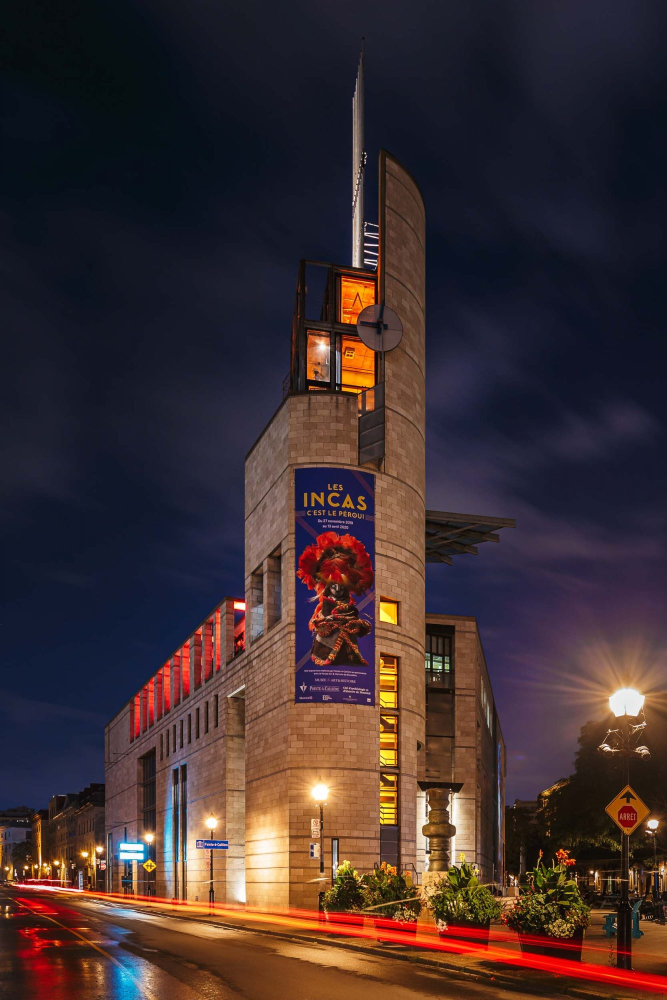

Montreal in a Day: Must-See Experiences
Celebrating Elegance: Notre-Dame Basilica of Montreal - A Historic Treasure
The Notre-Dame Basilica of Montreal is a stunning Gothic Revival-style church located in Montreal, Canada. Constructed between 1824 and 1829, it features intricate
architecture, a captivating interior with a celestial-themed ceiling, and notable features such as the Chapel of the Sacred Heart and a renowned pipe organ.
It serves as a significant place of worship for the Catholic community and is a major tourist attraction, offering guided tours and a popular sound
and light show called "Aura." The basilica's historical and architectural significance is preserved through restoration efforts, making it a symbol of Montreal's
heritage and culture.
Exploring the Charms of Rue St-Paul, Montreal
Rue Saint-Paul, also known as St. Paul Street, is a historic and picturesque thoroughfare in Montreal's Old Montreal district.
Dating back to the 17th century, this cobblestone-paved street is renowned for its well-preserved architectural treasures, including French Colonial
and Neo-Classical buildings. It's a hub for culture, offering art galleries, museums, and theaters, as well as a haven for shoppers with boutique stores
and antique shops.
Architectural Wonder: Discovering Habitat 67 in Montreal
Habitat 67, a distinctive architectural complex in Montreal, is renowned for its innovative design by Moshe Safdie. Comprising 354 modular concrete cubes, the
structure defies convention, providing individual private residences. Initially conceived as an experiment to address urban housing challenges, it now offers
residents unique living experiences with private terraces and breathtaking waterfront views. Situated along the Saint Lawrence River on the Cité
du Havre peninsula, Habitat 67 stands as an iconic symbol of modernist architecture, contributing significantly to Montreal's architectural heritage and
leaving a lasting impact on the world of design and construction.

Pointe-à-Callière Museum: Montreal's Rich History and Archaeology
The Pointe-à-Callière Museum in Montreal, Canada, is a historical and archaeological institution situated in Old Montreal. Built atop an important archaeological
site, it delves into the history and culture of Montreal and its Indigenous heritage, including exhibits on the fur trade, colonial period, and city's development.
Visitors can explore underground archaeological remains, providing glimpses into Montreal's 17th-century origins. The museum hosts temporary exhibitions, educational
programs, and special events.